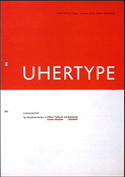

Essay
Essay
An Asymmetrical Life
The name Jan Tschichold brings to mind two very different styles. It evokes Bauhaus modernism and asymmetrical designs or uncompromisingly clean and classical books. Or perhaps it is beyond recognition. Yet even if you don’t remember his name stamped on a book the mark of his work is clear: Tschichold proved to be one of the most influential typographers of the twentieth century.
Mild in all but his opinions, he spent over 40 years learning and shaping the field of typography for “...he wanted not to take refuge in a better library but to live in a better world.”. Few can claim that, fewer still to have achieved it with two vastly different styles, or been so skilled at both. Yet the two styles may not be as opposite as one might think, nor could they have existed without the ideals that lay beneath them both.
Young Rebel
Born the son of a sign-painter in 1902 in Leipzig, Tschichold was exposed to typography from an early age, becoming a proficient letterer and developing an interest in calligraphy. At such a young age, he had not only skill but strong opinions. When he was twelve he was so dissatisfied with the design of a novel he was reading that he redesigned the title page. This was the beginning of his self-education.
He would spend days in the museums while the Great War raged, studying the art of the past before attending the Teacher Training College at Grimma and the Academy for Graphic Arts and Book Production at Leipzig. His education brought him to the realisation that there was need for reform in typography but what kind of reform he did not know until he attended the first Weimar Bauhaus exhibition in 1923. This was the radical change he had been seeking, discarding the old ways in favour of a new style forgoing individualism and cultural divides brought on by war. And so Die Neue Typographie (‘The New Typography’) of Jan Tschichold began.
- 
Some of Tschichold's early poster designs, making use of sharp angles, simple colours, and asymmetrical layouts.
In 1925, Elementare Typographie appeared, proclaiming Tschichold’s principles of new typography. His manifesto made radical declarations, barring all serif typefaces and calling for a discarding of the past to bring in a new future of purposeful typography. Most of all, the new style followed the principles that:
- The purpose of all typography is communication.
- Sans serif is the typeface for the new age.
- Design must move beyond the past, discarding classical arrangements in favour of asymmetrical layouts with intentional use of white space and geometric shapes (especially lines).
- Industrial advances, such as printing and photography, are exact forms and should be used for modern communication.
This new style was heavily influenced by constructivism (Tschichold even took to calling himself Ivan or Iwan) and marked by bold, asymmetrical layouts which rarely used more than two primary colours and minimal but perfect text. His designs mainly encompassed advertising material but he also designed his own books, such as The New Typography with its solid black opening page and soft black linen case blocked in silver, which are still examples of fine design. He was one of the few from the movement with traditional training in lettering and calligraphy and this knowledge grounded his avant-garde style. He applied modernist design to everyday printing, still intent on reform and mass production in the spirit of the age. His desire was clear: a new way of typography for communication in the modern age.
The Penguin Years
21 years after accepting a teaching post from Paul Renner in Munich and 14 years after leaving Germany, an older and less outspoken but just as determined Tschichold arrived in England as a typographer. His task: reform Penguin Books’ design. But this was not to be a radical shift to new typography, rather a subtle reworking in a classical style. Indeed, barring the uncompromising perfection of the type, it is practically unrecognisable as the work of the same designer.
Allen Lane, the founder of Penguin who personally sought out Tschichold, called him “a mild man with an inflexible character.”. Ahead of his arrival, Tschichold requested a sample of all of Penguin’s published material and annotated them with his criticisms to be sent back before he assumed his post. He spoke just enough English to inform others of his opinions but feign no understanding when anyone tried to argue with him. Such inflexibility would be necessary for the work to come. It was a formidable task on a scale not before attempted and made possible only by modern printing methods. Tschichold was one of the few who could have undertaken it, with his great attention to detail and special focus on printing and ‘the engineer’ since his early days as an advocate of The New Typography.

Penguin covers before and after Tschichold's reform.
Put in charge of the entirety of Penguin’s printed material, he laid down the Penguin Composition Rules and implemented a grid that standardised details such as text area and margins. Only the typeface and layout of title pages was never standardised and Tschichold personally designed over 500 in his two and a half years at Penguin. The covers were redesigned with improved letter-spacing and the iconic Penguin logo redrawn by Tschichold himself. He drew or supervised the drawing of symbols for all the series and his redesign is still the basis of the modern Penguin logo. By the time he left in December 1949, he had designed (or redesigned) over 15 Penguin series, including Pelican Books, Penguin Classics, and Penguin Shakespeare.
“This period was the typographic foundation of my life.”
—Erik Ellegaard Frederiksen, Tschichold's only assistant at the time
It was also the typographic foundation of Penguin’s design and is still recognisable today more than half a century after he raised the standard of British printing.
A Change of Heart or Style?
What prompted such a shift from a vocal exponent and master of an avant-garde movement to designing some of the most iconic classical layouts in publishing? A little less than 15 years may seem short for such a change but it must be remembered that gap included a world war and both incredible devastation and reconstruction. In 1933, 14 years before Tschichold’s job at Penguin, the fervour in Germany was not solely dedicated to new typography. Tschichold was forced to leave Germany after he was declared a ‘cultural Bolshevist’. His books were seized “for the protection of the German people” and he spent six weeks imprisoned before fleeing to Switzerland with his wife and son. It was then that the true change began.
Upon reexamining his early stance, Tschichold found alarming parallels to the doctrine of National Socialism, particularly in the exclusion of all typefaces save sans serif and the ruthless use of lines. It seems fair then, that there would be a reactionary response in his design and he looked towards the method he previously discarded. Asymmetrical layouts gave way to centred book designs, photographs and geometric shapes were supplanted by selective use of illustration and ornamentation, and harsh sans serifs were replaced by classical serifs.
Tschichold's two title pages for the Penrose Annual, designed 11 years apart in two opposite styles.
But was the shift from modernist New Typography as polar and reactionary as first appears? Change had been creeping in since the 1930s and the publication of his second book, Typographische Gestaltung, which even went so far as to use a serif font for the text and advocate having serif typefaces on hand as a second choice after sans serif for book design. What seems like a swing from one opposite to another can also be tracked as a greater understanding as he grew in knowledge and experience.
“I am the most severe critic of the young Tschichold of 1925-8. A Chinese proverb says ‘in haste there is error’. So many things in that primer [The New Typograhpy] are erroneous because my experience was too small.”
—Jan Tschichold, introduction to English Edition of The New Typography
It is better not to divide Tschichold’s career into two styles but see it as a whole. The change was most crucially an acceptance of different styles as his experience grew. He deemed the classical, symmetrical layouts more appropriate for book design in his later career. If he had thought a striking asymmetrical design more legible and suiting for novels, I imagine he would have used it.
Outwardly the style changed but so did the objects of his work, from mainly advertising to book design. Inwardly, his high standards and strict opinions remained. Even his designs at Penguin, while classical, conformed to some of his early views. They were cheap, mass produced design for the general public that did not compromise quality. Even ‘Iwan’ Tschichold could have been proud of such an achievement. Perfect typography and clear communication for the modern age were still the goal and uncompromising design and attention to detail were still his means of achieving it, regardless of style.
“In typography neither the old style nor a new style matters; quality does.”
—Jan Tschichold, Symmetrical or Asymmetrical Typography (The Form of the Book)

The evolution of Tschichold's own title pages, from 1928 to 1972.
Master...
In 1974, Tschichold died with over 50 written works to his name, including translations into multiple languages, with topics ranging from typography and book design to Chinese colour prints and the satirical novels of Laurence Sterne. During his life, he became the first European to win the gold medal of the American Institute of Graphic Arts, (the highest award of the American graphic design industry), and was one of the few foreigners named Honourary Royal Designer for Industry in Britain “for outstanding contributions as a typographer and book designer”. As a crowning achievement, his home city of Leipzig honoured him with the highest European award for typography; the Gutenburg Prize. However, for Tschichold typography would always be more important than any award.
“Good lettering demands three things: Good letters ... Good design ... A good layout.”
—Jan Tschichold, Treasury of Alphabets and Lettering
Good letters, good design, and a good layout. He does not say which typefaces or what layout, he only states that it should be good and appropriate. His high standards never fell, the true shift was not from asymmetric design to centred layouts, but from only one design to any appropriate good design. His life illustrates the importance of never stopping to learn or reexamine your own methods. His work may seem old fashioned by today's standards yet his composition rules are still used as reference, his theories on lettering and spacing still observed, and his early avant-garde style still admired and imitated. The more typefaces we have available and the easier it becomes to create computer graphics, the more important his often preached 'tact' becomes for designers. Styles may change but quality persists. Tschichold is a prime example of such.
...and Servant
“They [designers] are not the master of the written word but its humble servants.”
—Jan Tschichold, Graphic Arts & Book Design (The Form of the Book)
Few can claim to be a greater master of typography while always remaining a servant to communication than Tschichold. After years of practice, he no longer saw design as being centred around personal style, rather the quality and suitability of the end result. In a career that spanned over 40 years, he created typefaces, mastered calligraphy, wrote and designed books, and practiced both avant-garde and classical design with equal skill.
His was a varied life, an asymmetrical life, but an undeniably influential one.
Bibliography
| Baines, Phil. Penguin By Design. 1st ed. London: Allen Lane, 2005. Print. | Carter, Sebastian. Twentieth Century Type Designers. 1st ed. London: Trefoil Publications, 1987. Print. |
| Kelly, Jerry. The Art Of The Book In The Twentieth Century. 1st ed. Rochester, N.Y.: RIT Cary Graphic Arts Press, 2011. Print. | McLean, Ruari. Jan Tschichold, Typographer. 1st ed. London: Lund Humphries, 1975. Print. |
| McLean, Ruari. Jan Tschichold: a Life in Typography. London: Lund Humphries, 1997. Print. | Meggs, Philip B and Alston W Purvis. Meggs' History Of Graphic Design. 5th ed. Hoboken, N.J.: John Wiley & Sons, 2012. Print. |
| Spencer, Herbert. Pioneers Of Modern Typography. 1st ed. London: Lund Humphries, 1969. Print. | Tschichold, Jan. Asymmetric Typography. 1st English ed. Toronto: Cooper & Beaty, 1967. Print. |
| Tschichold, Jan. The Form of the Book. 1st English ed. London: Lund Humphries, 1991. Print. | Tschichold, Jan. The New Typography. 1st English ed. Berkeley: University of California Press, 1998. Print. |
| Tschichold, Jan. Treasury of Alphabets and Lettering. 1st English ed. Hertfordshire: Omega Books Ltd, 1985. Print. | Charchar, Alexander. “Jan Tschichold’s Inspiring Penguins”. retinart.net |
| Charchar, Alexander. “Jan Tschichold — Typographic Genius”. retinart.net | Flask, Dominic. “Jan Tschichold : Design Is History”. designishistory.com |
| Holbo, John. “Typocalpse Now?' The Legacy of Jan Tschichold”. berlinbooks.org | Hollis, Richard. “Jan Tschichold: A Titan of Typography”. theguardian.com. 5 Dec. 2008. |
| “Tschichold's New Typography”. designhistory.org | “Penguin Books - Designing Modern Britain”. designmuseum.org |